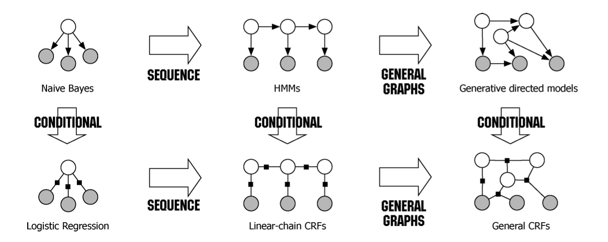
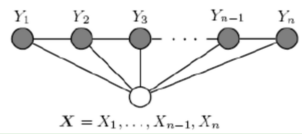

好, 啊今天来康康传说中的条件随机场CRF(Conditional Random Fields).
有一说一, 我认为CRF是自然语言处理, 甚至机器学习算法中, 比较难的一个算法了. 当初在学习李航的<统计机器学习>时, 我真的看不懂它在干什么QAQ
后来在一个学习群(你们懂的)聊天时, 我说CRF很难, 一位群友说”CRF? 特别简单好吧”, 只能说群友藏龙卧虎, 我菜得真实QAQ.
本篇主要介绍CRF的由来, 能够解决的问题. 理论推导(主要包括推断和学习), 以及和HMM, RNN等模型的联系将在下一篇讲解.
同时, 由于CRF涉及到的知识面其实很广, 我不可能在这里面面俱到, 一些地方可能会比较简略(我也没懂透QAQ
这里还推荐两篇论文, 会非常系统地讲解CRF有关的方方面面, 一篇叫做An Introduction to Conditional Random Fields, 还有一篇叫做Log-linear models and conditional random fields, 有空的同学可以阅读.
CRF简介
这一节没啥公式, 主要介绍一些基础概念.

首先来康康上面这张图, 在这张图中, 主要描述的是各个模型之间的关系.
第一排从左到右, 分别是朴素贝叶斯, 序列化后, 变成HMM, 进一步泛化后, 变成生成有向图模型.
由第一排条件(判别)化后, 可以得到第二排的模型, 从左到右分别是逻辑回归, 序列化后, 变成线性链CRF, 进一步泛化后, 变成判别无向图模型.
这里涉及到两个概念, 一个是有向图/无向图, 另一个是生成/判别模型, 下面分别进行简要介绍.
有向图与无向图
图可以看成是一种数据结构, 在统计当中, 可以用于表示随机变量之间的关系, 由节点和连边组成.
有向图, 指的是节点之间的关系存在方向性, 如HMM. 而在计算有向图所对应的概率的时候, 是相对比较简单和直观的. 回想HMM的联合概率计算方式:
即从初始节点对应的先验概率开始, 根据节点的依赖关系, 连乘以后验概率, 就可以得到有向图的联合概率分布.
无向图, 指的是节点之间存在关系, 但没有方向, CRF就属于无向图模型. 那么在计算无向图对应的概率分布时, 又应该怎么做呢?
是的, 无向图对应的概率分布没有有向图的那么直观和简单.一般来说, 会先将无向图划分为一些团, 每个团包含相邻的一些节点, 每个节点属于一个或者多个团.
而对于每个无向图的团$i$, 根据其不同的分布模式, 可以给出不同的分数(由参数决定)$s_i$. 那么对于一个无向图来说, 整体的分数等于所有团的分数$S_i=\prod s_i$. 由此, 无向图对应的概率分布为:
上面的$Z$又被称为配分函数, 表示归一化项. 无向图模型在一些问题上, 较有向图模型有更好的表现, 但是也正是因为$Z$的存在, 需要考虑所有可能存在的图的分布, 因此在计算难度上, 相比有向图要难一些. 关于$Z$的计算, 通常来说可以采用动态规划算法, 或者统计上的一些采样法等.
这里可能没有将概率图模型讲得很清楚, 感兴趣的同学可以另行谷歌, 或者康康一开始推荐的两篇文章.
生成模型与判别模型
仍然回想HMM, 或者朴素贝叶斯模型, 其对应的联合概率分布为$P(X,Y)$, 在模型学习的过程中, 对其进行优化; 在推断的过程中, 可以利用贝叶斯公式进行推断:
而判别模型, 如逻辑回归, CRF, 对应的都是条件概率分布$P(Y|X)$或者$Y=f(X)$, 在学习时针对这个条件概率分布进行优化.
对比生成模型与判别模型, 生成模型有以下特点:
- 通过贝叶斯公式可以转变为判别模型.
- 能够学习到数据分布, 进而生成数据样本.
判别模型有以下特点:
- 针对目标变量优化, 往往可以取得更好的模型效果.
用一个栗子来对生成模型和判别模型进行描述. 比如现在有一堆关于猫和狗的数据样本, 如果让生成模型来学习, 那么生成模型会学习它们的特征分布, 即猫有哪些特点, 狗有哪些特点. 然后在推断时, 给定$X$, 可以比较猫和狗哪个的联合概率分布$P(Y,X)$更大; 此外, 可以利用学习到的联合概率分布$P(Y,X)$, 生成一些关于猫或者狗的数据:
对于判别模型来说, 可以看做是学习的是猫和狗之间的区别(如判别边界). 那么在推断时, 给定$X$, 可以比较猫和狗哪个的条件概率$P(Y|X)$更大; 但是若要问判别模型猫或者狗长什么样, 判别模型会说无可奉告（○｀ 3′○）
CRF的由来
那么在介绍了有向图/无向图, 生成模型/判别模型后, 现在来介绍条件随机场CRF.
首先来康康神马是随机场, “随机场”的名字取得比较玄乎, 其实就可以看做一个无向图, 嗯, 问题不大.
那么再来说马尔科夫随机场, 一看到”马尔科夫”这个词, 其实大概就能明白一些意思了. 马尔科夫随机场是随机场的特例, 它假设在随机场中, 某一个节点的值(状态), 仅仅与和它相邻的节点有关. 比如在HMM中, 当前状态节点与前一个时刻的状态节点有关, 而在随机场这里, 还可以与其它更多相邻的节点有关.
最后, 就到了条件随机场了CRF了, CRF是马尔科夫随机场的特例, 它假设马尔科夫随机场中, 有两种类型的变量$X$与$Y$, $X$一般是给定的, 而$Y$一般是在给定$X$的条件下的输出. 这样马尔科夫随机场就特化成了条件随机场. 用数学语言进行描述: 设$X$与$Y$是随机变量, $P(Y|X)$是给定$X$时$Y$的条件概率分布, 若随机变量$Y$构成的是一个马尔科夫随机场, 则称条件概率分布$P(Y|X)$对应的模型是条件随机场.
需要注意的是, 在CRF的定义中, 并没有要求$X$与$Y$有相同的结构, 而实际当中, 一般要求$X$与$Y$有相同的结构, 即:
可以表示为如下图结构:

这样的条件随机场称为线性链条件随机场(Linear chain Conditional Random Fields), 简称linear-CRF.
哦对了, 还没有说CRF可以用来干嘛呢, 其实与HMM类似, 仍然是主要用于序列标注一类的问题, 如词性标注(POS Tagging), 命名体识别(NER)等.